|
Projet Jolly-Jumpi
1.0
BTS CIEL IR LaSalle Avignon 2025
|
|
Projet Jolly-Jumpi
1.0
BTS CIEL IR LaSalle Avignon 2025
|

Jolly Jumpi est un système inspiré du "Derby Forain" ou "Tiercé Forain" dont le but est d'être le premier à franchir la ligne d'arrivée en marquant des points.
Le jeu se compose de :
Les règles sont les suivantes :
Le matériel est :
Jolly Jumpi est développé en C++ avec le framework Qt.
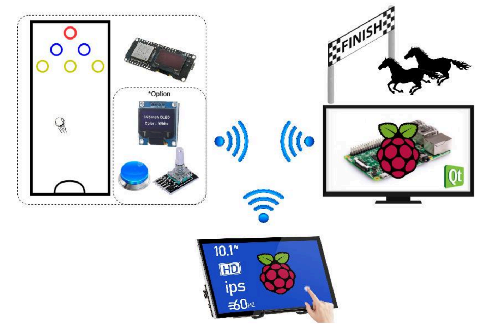
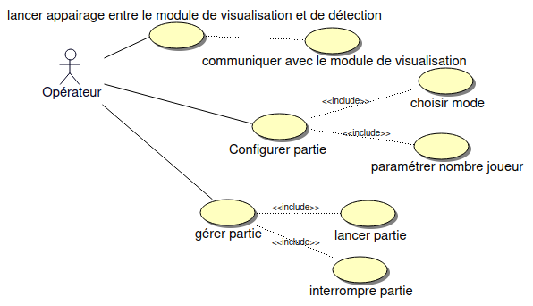
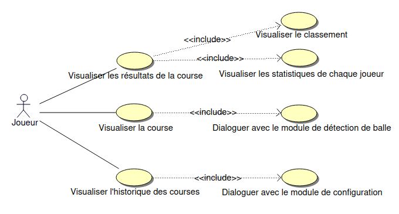

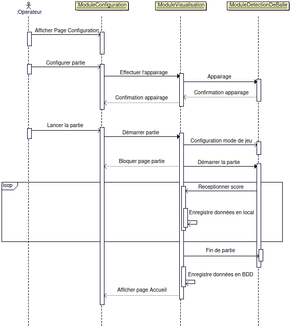
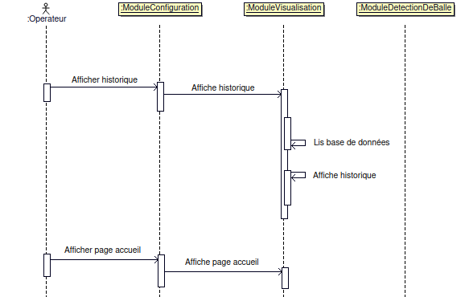
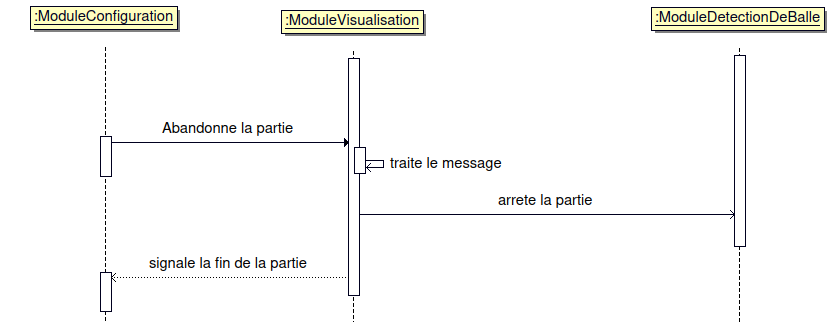
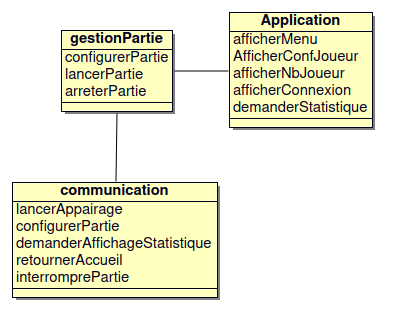
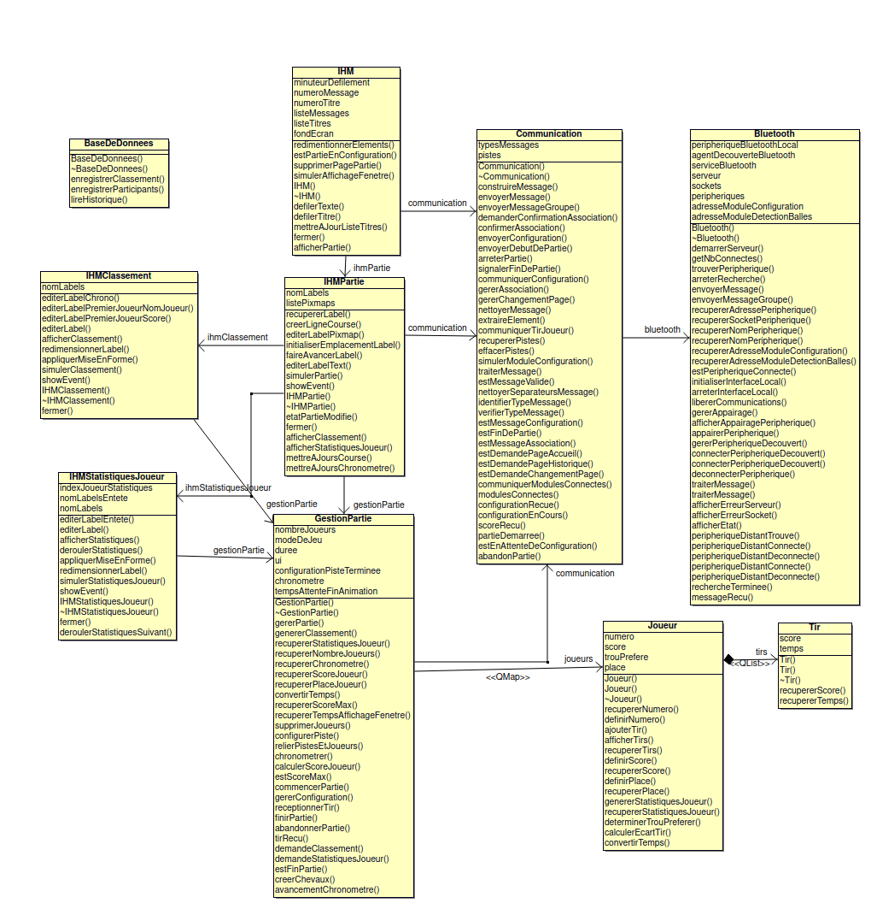
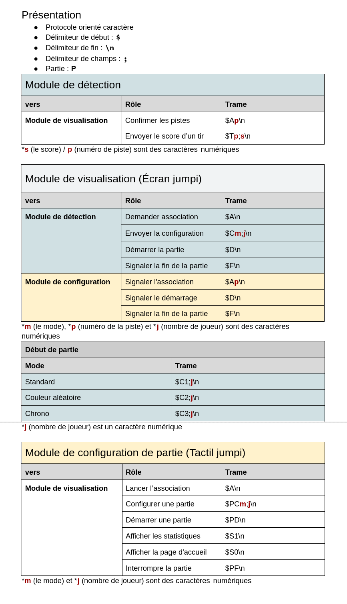
Quelques diagrammes des échanges :
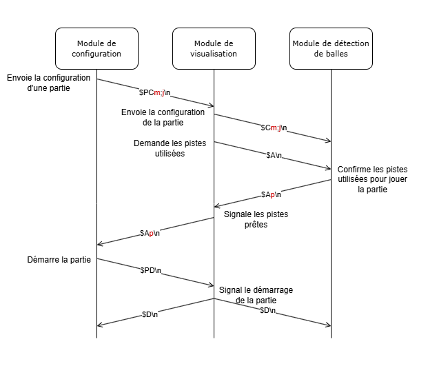
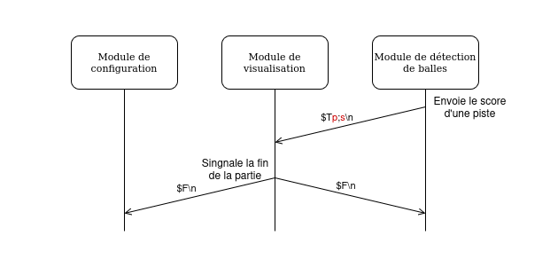
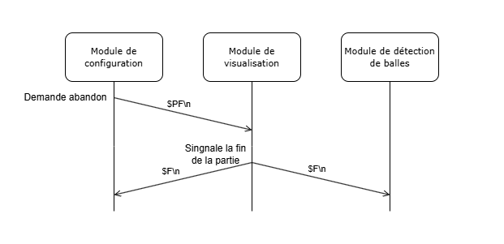
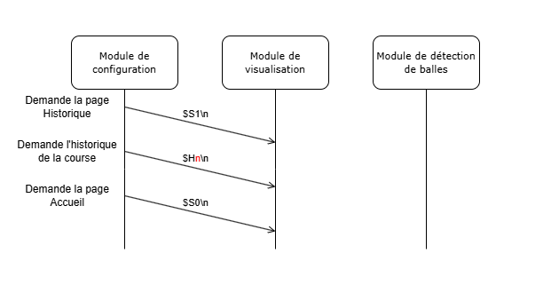
Les bases
> - [x] Créer des différents diagrammes > - [X] Définir le protocole de communication
Créer le squelette du projet
> - [X] Créer de l'arborescence commune
Module de visualisation : Créer les classes et attributs
> - [X] Créer les classes > - [X] Créer les attributs
Module de visualisation : Créer les affichages de base
> - [X] Créer la page Accueil > - [X] Créer la page Connexion > - [X] Créer la page Jeu > - [X] Créer la page Classement > - [X] Créer la page Statistiques:Joueur
Module de visualisation : Gérer les communications
> - [X] Recupérer un message > - [X] Traiter le message > - [X] Formater un message à envoyer > - [X] Envoyer un message
Configurer partie
> - [X] Ajouter des joueurs (1 à 8) > - [X] Démarrer/Communiquer la configuration de la partie au module de détection
Créer chronomètre
> - [X] Créer un chronomètre
Mettre à jour l'affichage
> - [X] Changer de page > - [X] Afficher la page Accueil > - [X] Afficher la page Connexion Afficher info état connexion > - [X] Afficher la page Jeu > - [X] Mettre à jour la page Jeu > - [X] Afficher la page Classement à la fin d'une partie (10 seconde) > - [X] Afficher la page Statistiques:Joueur après la page Classement (10sec par joueur)
Gérer événement partie
> - [X] Calculer le score d'un joueur > - [X] Enregistrer les données de la partie en local > - [X] Abandonner la partie > - [X] Mettre fin à la partie > - [X] Envoyer la fin de partie aux autres modules
Module de visualisation :
> - [ ] Créer la page Statistiques:Globales > - [ ] Afficher la page Statistiques:Globales
Etudiants IR :
© 2024-2025 LaSalle Avignon